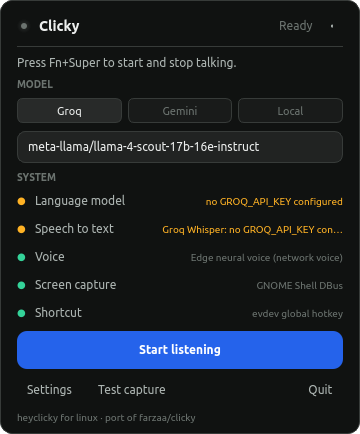

Point at anything.
Just ask.
HeyClicky is a push-to-talk companion that sees your screen. Hold a key, ask out loud, and the screen edges glow while it listens and a ring marks the answer as a voice tells you what to do.
cd heyclicky-linux && ./install.sh
Creates a private venv and a launcher. X11 is fully supported; Wayland notes here.
Three seconds from question to answer
No window switching, no screenshots to paste, no prompt writing. The whole loop is one held key.
Hold the shortcut and talk
Press Fn+Super (or your own combo) and ask naturally. Recording stops the moment you let go.
Clicky looks at your screen
Every monitor is captured, downscaled and labelled, so the model knows which screen you mean — including the cursor position.
It points and speaks
A pulsing ring lands on the exact spot, holds for a moment, then fades. The reply streams into the panel and is read aloud.
Everything the Mac app does, rebuilt for Linux
A native PyQt6 port of the open-source Swift original — same behaviour, same restraint, no Electron.
Multi-monitor aware
Captures each display separately at up to 1280px, tags screens in the prompt, and maps the answer back to the right monitor.
Points, not paragraphs
A per-screen transparent overlay paints a glowing border while Clicky is active and a pulsing ring on the element it is explaining — always click-through.
Streaming voice replies
Answers stream in token by token and are spoken as they arrive, while the edge glow pulses with your voice and settles while it thinks.
Bring your own model
OpenRouter (Nemotron 3.5 Super VL free) is the default; Groq and Gemini for speed, or Ollama locally for total privacy. Switch providers from the panel in one click.
Local where it matters
Optional on-device Whisper for transcription and Ollama for reasoning. Keys stay in your own config file with 0600 permissions.
Menu bar, minus the bar
Lives in the system tray. Talk, open settings, test capture, or quit — the panel is there when you want it and gone when you don’t.

Small on purpose
The original kept its UI to a single glanceable panel. This port keeps that discipline and adds the Linux plumbing underneath.
- Push-to-talk on X11, or GNOME toggle binding on Wayland
- Live provider and model health checks before you talk
- Ten-exchange memory for follow-up questions
- Overlay hides itself before screenshots — no feedback loop
- Cancel any answer mid-flight with a second press
- One-command install, desktop entry and autostart
Pick a brain
All four speak the same streaming interface, so switching is just a click in the panel. Vision support is detected, not assumed.
OpenRouter
Defaultnvidia/nemotron-3.5-super-vl:free
Default provider. NVIDIA Nemotron 3.5 Super VL on the free tier — 1M-token context, sees text, images and video, and no local model download. Set OPENROUTER_GEMMA_API_KEY in .env or Settings.
Groq
Fastestllama-4-scout-17b
Vision-capable and extremely quick. Also powers Whisper transcription with whisper-large-v3-turbo.
Google Gemini
Balancedgemini-2.5-flash
Strong screen understanding and a useful audio fallback when no Whisper key is configured.
Ollama
Localqwen2.5vl:7b
Runs entirely on your machine. Text-only qwen2.5 works too — pointing degrades gracefully when vision is absent.
Install in one command
Python 3.10+, a working microphone and a desktop session. The installer creates a private venv and a launcher — nothing system-wide.
cd heyclicky-linux && ./install.sh
Global hotkeys and silent screenshots are restricted by design. For the full push-to-talk experience, log into an Xorg session. On Wayland, HeyClicky falls back to a GNOME keybinding toggle and the XDG portal for capture — it will ask permission the first time. Fn chords work only when the laptop firmware reports the Fn key; otherwise HeyClicky falls back to another combo. Details in docs/LINUX_NOTES.md.
Verify your setup any time with heyclicky --doctor.
Stop describing your screen.
Hold a key and let Clicky point. MIT licensed, built on the open-source HeyClicky by Farza.
cd heyclicky-linux && ./install.sh